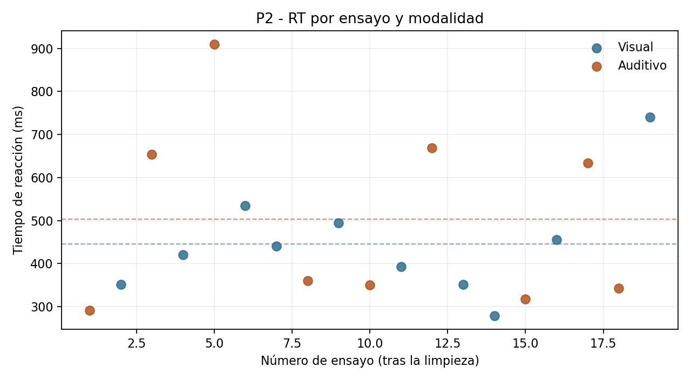

1. Fundamentos neurofisiológicos de las vías aferentes/eferentes
Para una tarea de tiempos de reacción tras estímulos auditivos y visuales, deben entenderse los procesos completos de cada índole.
En las reacciones tras estímulos auditivos, se entiende que las ondas sonoras entran por el oído interno, produciendo vibración en el tímpano y en los huesos de la cadena osicular, llegando al oído interno, donde las células ciliadas del órgano de Corti procesan el movimiento y lo convierten en una señal eléctrica.
Posteriormente, la señal viaja a través de la rama coclear del octavo par craneal, el par craneal vestibulococlear; el impulso sube haciendo sinapsis en los núcleos cocleares, el complejo olivar superior y el colículo inferior.
Finalizando el proceso aferente, la señal pasa por el cuerpo geniculado medial del tálamo y llega a la corteza auditiva primaria en el lóbulo temporal, estructura que identifica el sonido. Si este es el proceso dado, la información pasa a zonas como el área de Wernicke y la corteza prefrontal.
Sin embargo, si el sonido es muy fuerte o repentino, el colículo inferior y la formación reticular envían una señal de alarma inmediata antes de la llegada de la señal eléctrica, lo que provoca un reflejo motor de sobresalto o de movimiento para observar de dónde proviene el sonido, a través de la médula espinal y los nervios motores.
En cuanto a las vías nerviosas en la índole de estímulos visuales, el recorrido comúnmente inicia en la retina, donde el estímulo visual viaja por el nervio óptico, el quiasma óptico y el tracto óptico hasta hacer relevo en el cuerpo geniculado lateral del tálamo.
Posteriormente, la señal pasa por las radiaciones ópticas hacia la corteza visual en el lóbulo occipital y se integra en el giro angular y el área de Wernicke para comprender el texto. Tras esta interpretación, se activa el sistema límbico para generar la reacción emocional y la corteza prefrontal toma la decisión de actuar, enviando la orden a la corteza motora primaria bajo la regulación del cerebelo y los ganglios basales.
Finalmente, el impulso desciende por el tracto corticoespinal, cruza en la decusación de las pirámides y llega al asta anterior de la médula espinal, desde donde sale por el nervio periférico hacia la unión neuromuscular para ejecutar el movimiento.
2. Diseño metodológico y muestra
Para el segundo módulo, se ocupó una instancia experimental construida en la herramienta gráfica Psychopy Builder, herramienta digital especializada en la experimentación psicológica basada en estímulos, con una muestra N = 1, donde el participante realizó 20 ensayos de forma aleatorizada, constando de 10 estímulos no variables visuales y 10 estímulos auditivos no variables. Cada vez que escuchase el estímulo sonoro o viese el estímulo textual, debía presionar la tecla “Espacio” en el teclado para saltar al siguiente estímulo aleatorio hasta completar los 20 ensayos correspondientes.
La herramienta guarda múltiples datos de forma automática una vez finalizado el experimento, llegando al fin de la secuencia, y los guarda en archivos de hojas de cálculo, que suelen contener muchas variables no necesarias para el estudio, pero que el programa igual registra. Para esto, se ocupó un programa de tipo “Script” de autoría propia construido en el lenguaje de programación Python 3 y documentado por la inteligencia artificial “Opencode”, especializada en programación, para eliminar las variables innecesarias y anomalías, permaneciendo los datos relevantes previamente obtenidos. En la entrega de esta actividad, estarán presentes tanto la hoja de cálculo previa a la limpieza a través de scripts, el script ocupado para la limpieza de datos y la hoja de cálculo “Limpia” obtenida posteriormente.
| Protocolo | Participante | Experimentador | n | Diseño |
|---|---|---|---|---|
| P2 | Participante_01 | Estudiante | 1 | 20 ensayos · 10 por condición · 19 válidos |
3. Tablas de datos cuantitativos, representación gráfica y evidencia fotográfica original

| Condición | n | Media (ms) | Mediana (ms) | DE (ms) | Mín | Máx |
|---|---|---|---|---|---|---|
| Visual («¡YA!») | 10 | 446,0 | 430,5 | 127,4 | 279 | 740 |
| Auditivo (tono) | 9 | 503,2 | 360,0 | 218,5 | 291 | 910 |
| Diferencia (A − V) | — | +57,2 | −70,5 | — | — | — |
Registro de los 19 ensayos válidos
| Ensayo | Condición | RT (ms) |
|---|---|---|
| 1 | Auditivo | 291 |
| 2 | Visual | 351 |
| 3 | Auditivo | 654 |
| 4 | Visual | 421 |
| 5 | Auditivo | 910 |
| 6 | Visual | 534 |
| 7 | Visual | 440 |
| 8 | Auditivo | 360 |
| 9 | Visual | 495 |
| 10 | Auditivo | 350 |
| 11 | Visual | 393 |
| 12 | Auditivo | 669 |
| 13 | Visual | 351 |
| 14 | Visual | 279 |
| 15 | Auditivo | 318 |
| 16 | Visual | 456 |
| 17 | Auditivo | 634 |
| 18 | Auditivo | 343 |
| 19 | Visual | 740 |
Procesamiento: el CSV crudo se conservó sin modificar. En una copia se excluyeron las filas de inicio/despedida y un ensayo de 1151 ms (>1000 ms). La etiqueta piloting=True aparece solo en la fila de metadatos y no afecta los ensayos.
4. Discusión de resultados fundada en los principios de procesamiento sensorial y plasticidad neuronal
Teniendo en cuenta que el promedio de tiempo de respuesta visual es menor, siendo un promedio de 446,00 milisegundos en 10 ensayos válidos en comparación con el promedio de 503,22 en 9 ensayos válidos de los estímulos auditivos, con una anomalía de más de 1000 milisegundos en un ensayo auditivo, se postula un resultado anómalo, dado que en la mayoría de pruebas aplicadas a muestras y documentadas, los procesos de reacción auditivos suelen ser más rápidos que los visuales. Esto se sustenta teniendo en cuenta que la información auditiva se procesa en una vía más corta, y que analizar estímulos visuales requiere procesar información como color, profundidad, distancia y movimiento.